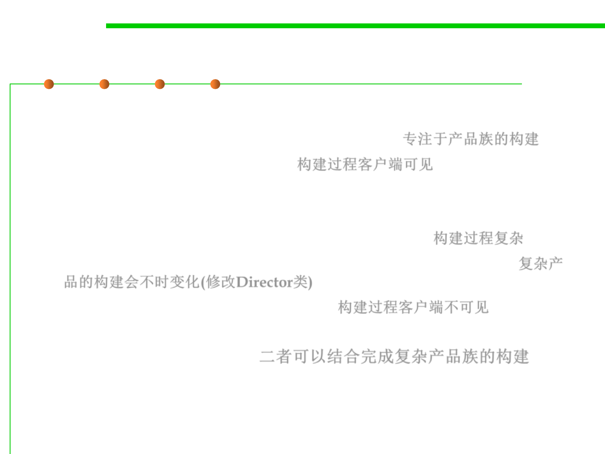

6.2 Design Patterns for Maintainability
Comparison: Abstract Factory vs Builder
▪ Abstract Factory
– Focuses on product family (similar product types) 专注于产品族的构建
– Does not hide the creation process 构建过程客户端可见
▪ Builder
– The underlying product needs to be constructed as part of the system, but
the creation is very complex (composition of products) 构建过程复杂
– The construction of the complex product changes from time to time 复杂产
品的构建会不时变化(修改Director类)
– Hides the creation process from the user 构建过程客户端不可见
▪ Abstract Factory and Builder work well together for a family of
multiple complex products 二者可以结合完成复杂产品族的构建